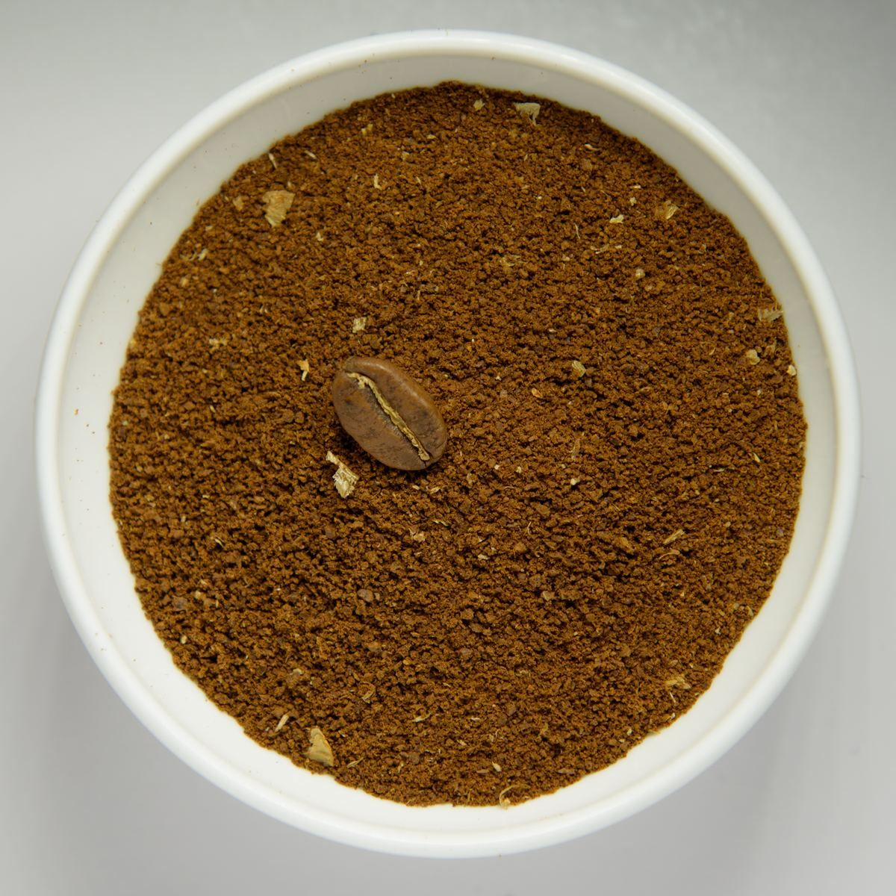
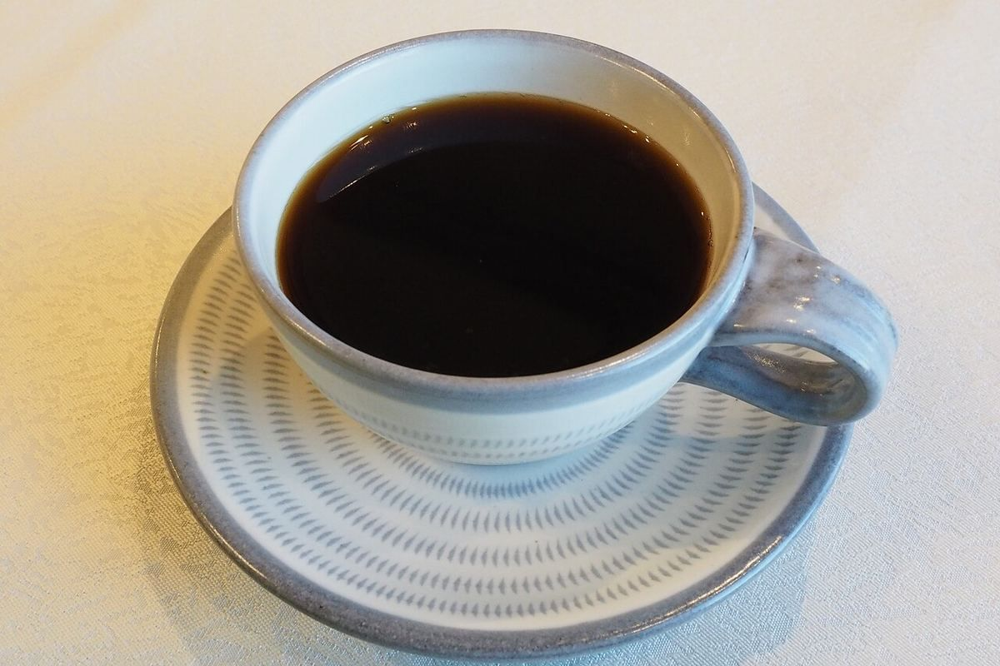

お店について
店舗情報
| 店名 | café三月 |
|---|---|
| 業種 | カフェ |
| 住所 | 鹿児島県霧島市国分野口東9-6 |
| 電話 | 080-4315-0718 |
| @cafe.sangatsu | |
| 営業時間 | 準備中(お問い合わせください) |
| 定休日 | 準備中(お問い合わせください) |
| 席数 | 準備中(お問い合わせください) |
| 駐車場 | 準備中(お問い合わせください) |
| 支払方法 | 準備中(お問い合わせください) |
| スタッフ | 準備中(お問い合わせください) |


このサイトのコンセプト(制作側の案)
このサイトは、情報が揃うまでの間、いま分かることだけを迷わず届ける、余白の多いサイトを目指して作りました。これはサイト制作側の案であり、お店の理念や店名『三月』の由来ではありません。お店のお考えは、お電話またはInstagramでご確認ください。
お店からのことば
準備中(お問い合わせください)
掲載写真はフリー素材のイメージで、café三月の実際の店内・商品・外観ではありません。日本国外で撮影されたものや撮影地が不明のものを含みます。
お店について知りたいことは、お電話またはInstagramでお尋ねください。